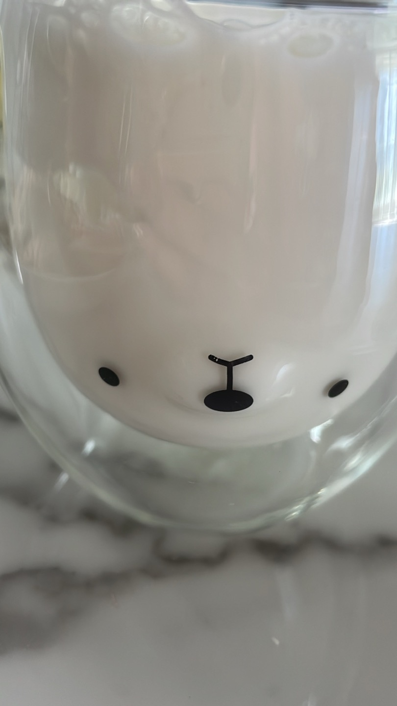

고양이 숟가락
교동에 있는 일본식 음식점에 밥을 먹으러 갔는데 귀여운 고양이 숟가락과 그릇을 내 주셨다. 일본식 음식점에 아주 잘 어울리는 식기라서 친구들과 귀엽다는 말을 연발하며 밥을 먹었다. 다른 곳에서도 귀여운 그릇들은 본 적이 있지만 ,고양이가 그려진 식기는 처음 봐서 새롭고 음식을 먹는 내내 기분이 좋았다. 평소에 식기도구에 관심이 없었는데 이 가게를 다녀오고부터 관심이 생겼다. 어릴 때 할머니 댁에 가면 분홍색 고양이 그릇에 밥을 차려 주셨는데 그때의 추억이 새록새록 떠올랐다. 그 그릇은 깨져서 버려지게 되었지만, 할머니의 사랑을 느낄 수 있어서 좋다.
크록스
사촌 동생들과 다 같이 크록스를 신고 찍은 사진이다. 이 날은 숙모가 일이 있다고 하셔서 학교 끝나고 동생들을 학원에서 데리고 숙모 집에 가서 동생들을 놀아줬다. 열한 살 남동생과 아홉 살 여동생이 있는데 남동생은 회색 크록스, 여동생은 보라색 크록스 그리고 내 크록스는 하얀색이다. 모아 놓고 보니 너무 귀여워서 사진 찍게 서 보라고 했다. 크록스에 끼운 지비치들에 각자 취향이 보여서 재미있었다. 남동생은 크록스의 맛에 빠져서 한겨울에도 같은 신발만 신는다고 숙모가 지긋지긋하다고 하셨다. 귀여운 동생들의 신발들이라서 좋다.
코미 양은 커뮤증입니다
최근 푹 빠져 있는 넷플릭스의 코미 양은 커뮤증입니다 라는 애니메이션 여자 주인공 코미 양을 그린 그림이다. 이 여자 주인공이 정말 예쁘고 내 취향이라서 코미 양을 보려고 애니메이션을 보는 것이라고 할 수 있다. 애니를 보면서 그림을 그렸는데 이 그림들이 마음에 들어서 사진을 찍었다. 되게 많은 장면을 그렸는데 중간에 있는 그림 두 점이 가장 마음에 들어서 이 그림들이 잘 보이게 사진을 찍었다. 좋아하는 것을 그리니까 재미있고 시간 가는 줄 몰랐다. 다음에는 다른 캐릭터들도 그려 보고 싶다. 내용도 재미있어서 추천하고 싶은 힐링 애니다.
냅킨 장미꽃
인스타 릴스에서 냅킨으로 장미꽃 만드는 방법을 본 후에 스타벅스에 가서 본 그대로 장미꽃을 만들어 보았다. 네모난 모양으로 무언가를 닦는 곳에만 쓰이던 물건이 예쁜 장미꽃 모양으로 바뀌니까 신기하고 예뻤다. 그래서 눈길이 가는 사진이라고 찍어 두었다. 하지만 이 장미를 만들고 나서 다른 장미들도 만들어 보려고 했는데 처음처럼 마음에 들게 나오지 않아서 기분이 좋지 않았다. 다음에는 다른 모양도 냅킨으로 만들어 보고 싶다. 냅킨으로 장미꽃 만들기는 카페에 가서 수다 떨면서 손으로 꼼지락 꼼지락 만들기 좋다.
곰돌이 컵
작년 생일 선물로 아는 언니가 보내준 곰돌이 컵이다. 곰돌이 얼굴 프린팅과 밑 쪽을 보면 귀부분이 구멍이 뚫려 있어서 정면에서 보면 곰돌이가 보이는 컵이다. 신기한 것은 담는 음료에 따라 곰돌이 색이 달라진다. 오렌지 주스나 물을 담아도 귀엽지만 나는 흰 우유를 넣었을 때 컵의 매력이 가장 매력이 돋보이고 마음에 든다. 날씨도 좋고 하늘도 쨍한 푸른색이라서 온도가 기분 좋았다. 이 사진에서 마음에 드는 다른 이유는 컵의 오른쪽에 푸른색 창 밖이 살짝 비친다. 기분이 좋아지는 사진이다.
새끼 고양이
영남대학교 앞의 오렌지 거리에서 돌아다니다가 발견한 새끼 고양이이다. 철제 계단 사이로 주먹만 한 생명체가 걸어 다니고 있어서 봤더니 귀여운 고양이었다. 주변을 보니 다른 새끼 고양이와 엄마로 보이는 고양이도 있었다. 고양이 가족이다. 해가 지고 있는 노을빛에 비친 새끼 고양이가 예쁘다. 이렇게 작은 고양이를 밖에서 처음 봐서 너무 귀엽고 신기했다. 이 때 만난 고양이들이 밥을 잘 먹고 아프지 말고 오래오래 건강하게 잘 살았으면 좋겠다. 나중에 길 가다가 건강하게 지내고 있는 모습을 꼭 다시 보고 싶다.
칠판 낙서
강의실에서 수업이 끝나고 친구가 칠판에 낙서한 사진이다. 삐뚤빼뚤한 글씨가 귀엽다는 생각이 들어서 사진을 찍었다. 나는 길쭉길쭉하고 딱딱한 글씨체보다 동글동글 귀여운 글씨체가 더 좋다. 그래서인지 내 글씨도 동글동글하다. 미대라서 그런지 주변 친구 중에 글씨도 잘 쓰는 친구들이 많다. 나도 글씨를 잘 쓰고 싶다. 어떻게 하면 더 잘 쓸 수 있을까? 많이 써 보고 공부해 봐야겠다. 요즘에는 연필으로 글씨를 쓸 일이 잘 없어서 내가 스스로 글을 쓰려 하지 않으면 연습할 일이 없다. 생각해 보면 고등학교 때도 그랬다.
벚꽃
아르바이트 갔다가 늦은 저녁에 집에 가고 있었는데 평소에는 눈에 잘 안 들어오던 벚꽃이 질 때가 되었다고 생각하니까 괜히 더 아쉬운 느낌이 들어서 평소보다 더 오래 봤다. 벚꽃은 매년 피니까 뭐하러 사진을 몇십 장씩 찍나 했는데 막상 찍고 보니까 마음에 든다. 이번 벚꽃 시즌에는 심한 감기에도 걸렸고 비도 와서 뭔가 어영부영 지나가는 느낌이다. 딱히 즐기는 편이 아니었는데 새내기라는 생각과 주변에서 꽃놀이하러 간 것을 보니 약간 아쉽다. 봄은 너무 짧고 곧 여름이 온다는 생각을 하니까 너무 싫다.
네 잎 클로버
사진 찍는 과제를 하다가 잔디밭에 클로버들이 있길래 봤는데 운 좋게 네 잎 클로버를 찾았다. 원래는 네 잎 클로버 찾는 게 엄청나게 힘들었는데 친구가 쉽게 찾는 법을 알려 줘서 한 번 찾은 뒤로 그렇게 어렵지 않게 네 잎 클로버를 찾을 수 있다. 그래도 많은 세 잎 클로버들 사이에서 네 잎 클로버를 찾는 것은 기분 좋아지는 일이다. 그래서 눈길을 끄는 사진으로 찍어 보았다. 그리고 아르바이트를 시작한 뒤로부터 손톱이 다 깨져서 사진에서도 보이니까 속상하다. 보기에 좋지 않으니 손톱을 조금 더 조심히 다뤄야겠다.
옛날 전화기

다른 지역에 사는 친한 언니가 대구에 놀러 와서 같이 유명한 카페에 갔는데 소품으로 옛날식 유선 전화기가 있었다. 소품들의 배치가 적절하고 빨간색이 마음에 들어서 눈길이 갔다. 나는 이런 빈티지다운 느낌이 나는 감성 카페들을 찾아다니는 것을 좋아하는데 볼 때마다 이렇게 예쁘게 카페를 꾸미는 사장님들이 신기하고 나중에 나도 여유가 된다면 이런 카페를 차리고 싶다. 이 카페는 원래 가던 카페의 2호점인데 나는 2호점이 더 마음에 든다. 이 카페를 다른 친구들에게도 소개해 주고 싶어서 또 갈 것이다.